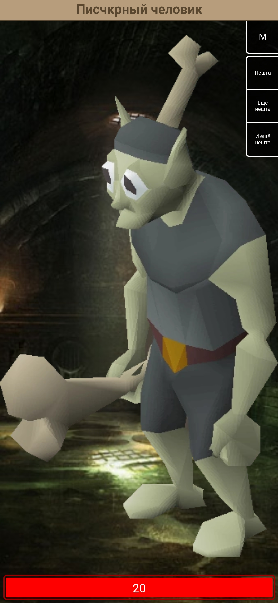

Ещё раз с днём рождения тебя! И прости, что такой подарок странный, воображения к сожалению нет, но надеюсь он тебе понравился хоть чуть-чуть.
Если эта страница кажется очень знакомой, то правильно кажется, в ней я только добавил диагональные линии. Также есть небольшая новая штука - это, как ты слышишь, музыка.
О чём рассказать? Да я не знаю о чём хорошем рассказать, что будет интересно. Пусть будет сначала о моде и его будущем.
Я знаю, что мод не продвигается никак и баги ещё присутствуют, этому есть объяснение. Баги ещё не пофикшены и нет новой версии, потому что:
А теперь о том, почему не продвигается разработка. Как я уже говорил выше, комп херня, об этом теперь поподробнее. Моему компу(ноуту, без разницы) лет 7 так точно, и с каждым годом он становился всё медленнее и медленнее. В текущем состоянии, он может послушать немного музыки, поиграть немного в майц особенный(для винды 10) и в дискорде поговорить. Если запустить VSCode, то есть прогу, в которой я пишу код для мода, то во-первых он будет запускаться долго, во-вторых лагать, в-третьих может для него не хватить оперативы. Хуже того, если делать что-то чуть более интенсивнее, то комп просто перегревается и вырубается. После перегрева, ему нужно постоять 2 минуты, чтобы остудиться; после этого я его запускаю и жду минут 2-5, чтобы запустилась винда. Когда она запустится и я ввожу пароль, нужно подождать ещё минуту или две, пока всё запустится системное и отлагала панель задач. И только после этого я могу начать что-то запускать. Вот так всё плохо на данный момент.
Есть однако хорошая новость, мой брат собирает мне хороший быстрый комп на др, и за это я ему сильно благодарен. А это значит, что мод я уже буду спокойно и гладенько делать, только ещё инет немного хромать будет, но это уже не проблема. Можно ждать хорошего в 2020 году.
Так как у тебя появился графический планшет, возможно мод наконец-то обретёт нужные отсутствующие спрайты. Я конечно не говорю, что сразу, это требует практики, как и все вещи. Да и это конечно же по твоему желанию, не заставляю.
С граф. планшетом ты конечно будешь шпрехать отличные картины после хорошей практики(не говоря о том, что уже получается, по-моему уже красиво). Иметь такие умения в рисовании уже что-то большое. До сих пор помню рисунок кривыми с помощью мышки..
Bunny16Ya_Dyatell_.png
Полный размерКогда я делал твой сайт(я кстати сделал параллакс, на телефоне пока не работает, но я обязательно доработаю) и ты дал мне картинку "профиля" для главной страницы, я увидел в интересах программирование и меня это удивило. Я конечно не совсем понял какое именно программирование, графическое или писать код вручную, но всё равно интерес очень такой хороший по-моему. Если так и будет дальше интересно оно, то думаю во что-то это может воплотиться, чем-то оно будет полезным. Вообще это почти неудивительно, что тебе такое интересно, потому что человек ты очень творческий и идей у тебя много, а это значит, что с программированием ты должен ладить хорошо( с помощью него же можно осуществить всё, что хочешь сделать, как говорится "The sky's the limit"), хоть я и не знаю правды.
Вообще, как я думаю, самый лёгкий и интересный вариант программирования, это веб-разработка. Это значит, что ты делаешь не только просто сайты, но и пишешь различные скрипты для различных вещей быстро, тем самым достигая ответов на сложные вопросы. Браузеры уже стало настолько продвинутыми, что можно делать полные 3D или 2D игры с сюжетом в онлайне, которые будут быстро загружаться. Хорошим примером служит Granblue Fantasy, там всё есть как в обычной устанавливаемой игре.
А вообще, я желаю тебе удачи в продвижении твоих проектов, и даже если они заброшены, можно в любой момент за что-то зацепиться и продолжить работу. А если не получается что-то с механикой, в любой момент можно попробовать другой движок или даже просто заново начать в том же движке, только всё аккуратно организовывать, чтобы опять не запутаться. Я, к сожалению, уже монстр какой-то, у меня много-много разных версий моего кликера(на комп несколько штук, на телефон даже уже второй вариант игры, но он ещё не продвигается), но не одна не закончена и не будет точно, потому что мне вечно всё лень после хорошего ажиотажа.
На чём закончился мой последний кликер
 Полный размерВ общем, желаю тебе всего хорошего, а именно продвижения в проектах, удачи в учёбе и продолжении жизни в дальнейшем.
Credits
Music: Evan Call
Music by Evan Call used (from album VIOLET EVERGARDEN: Automemories)
Unspoken Words
Ink To Paper
The Love That Binds Us
{kind=link}
{kind=link}